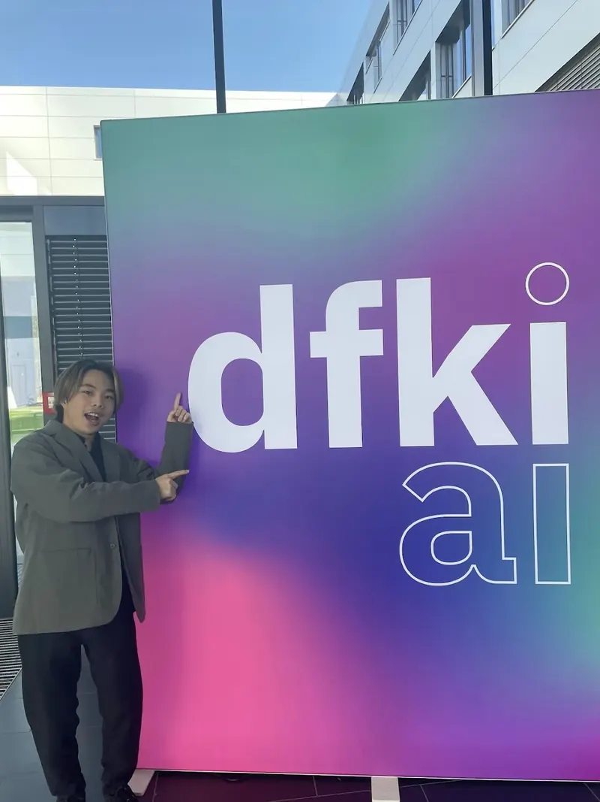
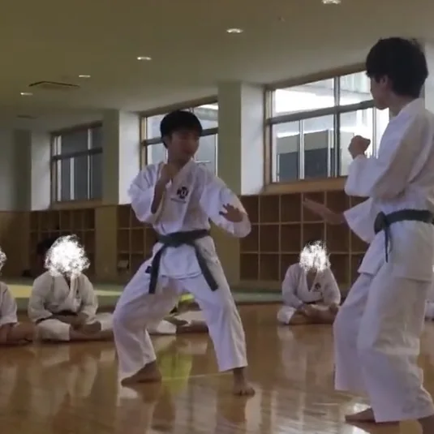
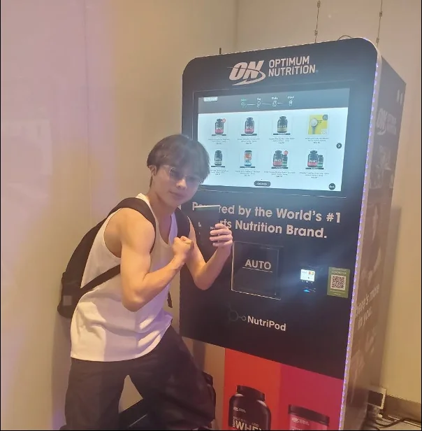
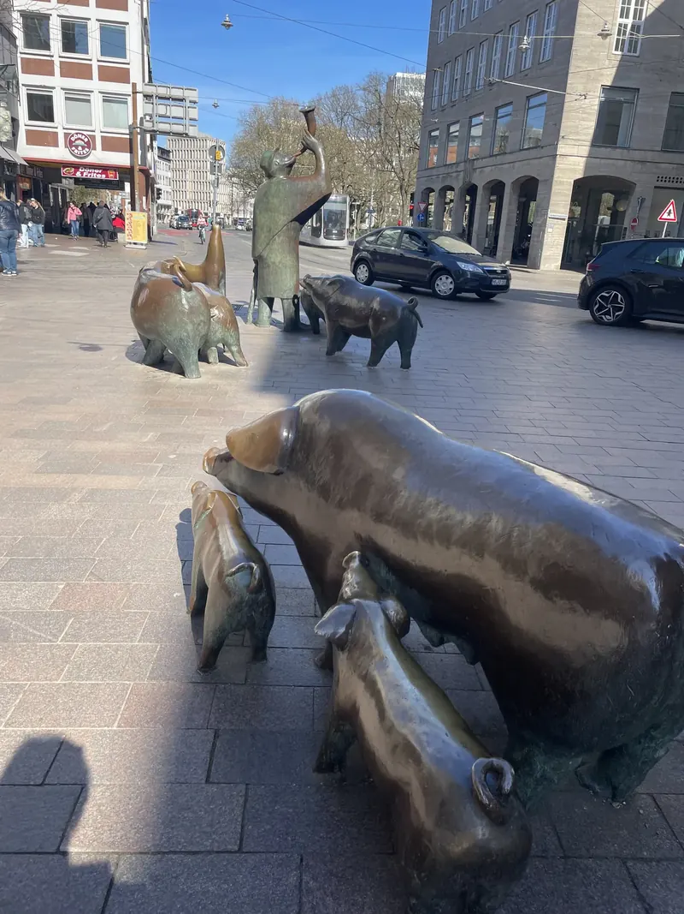
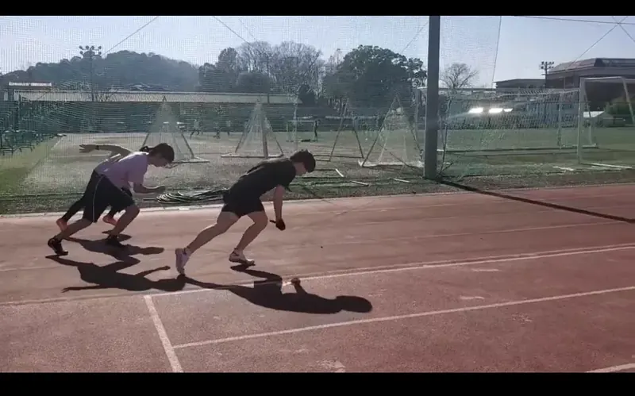
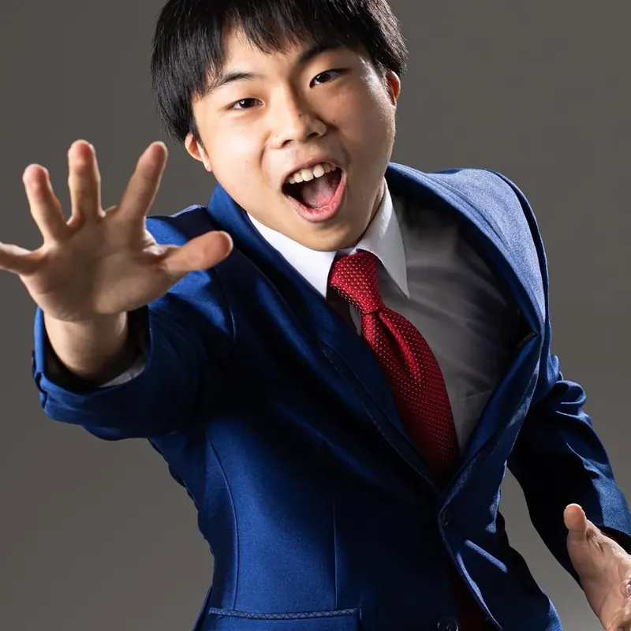

PHOTO GALLERY
Gallery.
Photographs from research stays abroad, travels, and everyday interests.

Longyearbyen, Svalbard
At the airport in Longyearbyen during a trip to Svalbard in March 2025.
{kind=link}

Studying abroad at DFKI
At DFKI in Bremen, Germany, during my research stay on robot arm control.

Homemade bento at Fujiwara-kyō
A homemade bento beside the cosmos fields at Fujiwara-kyō in Nara. I enjoy cooking and history.

Presentation at Georgia Tech
Presenting research on metagenomic analysis during my stay at Georgia Tech in the United States.

Beer and currywurst
Beer and currywurst in Germany. My favorite beer style is Weizen.

A Bayern Munich match
At the Allianz Arena in Germany for a Bayern Munich Bundesliga match.
{kind=link}

Shorinji Kempo
Practicing Shorinji Kempo.
{kind=link}

Weight training and a trip to Singapore
In front of a protein vending machine in Singapore. Weight training is one of my interests.
{kind=link}

Walking around Bremen
Pig sculptures encountered while walking around Bremen during my research stay at DFKI.
{kind=link}

Track & field
Training on the athletics track.

JAXA ISAS
At JAXA’s Institute of Space and Astronautical Science.

Diving
An underwater photograph while diving.

Discussion at the venue
OpenAI Codex Student Builder Fest 2026 · 2026.09.15. Developed WalkIsFun, a map service for finding the shortest route through shade, in a three-person team at OpenAI’s student hackathon. Served as project manager.
Writing a participant badge
OpenAI Codex Student Builder Fest 2026 · 2026.09.15. Developed WalkIsFun, a map service for finding the shortest route through shade, in a three-person team at OpenAI’s student hackathon. Served as project manager.
{kind=link}

Profile photograph
The photograph used on this website’s homepage.